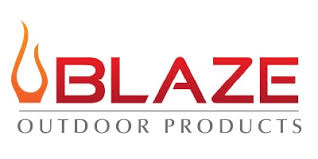
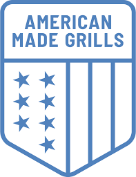

We carry 18+ premium brands, each hand-selected for quality, performance, and durability. If you want the best, this is where you find it.

Blaze delivers professional-grade performance at a price that makes sense. Known for their lifetime warranty and rock-solid construction, Blaze is one of our top sellers for outdoor kitchens and freestanding setups alike.
View ProductsLynx is the pinnacle of outdoor cooking. Their Professional line is handcrafted in the USA and built to last a lifetime. When someone is serious about their outdoor kitchen, they often end up choosing Lynx.
View ProductsNapoleon offers one of the widest ranges in our catalog, from the entry-level Travel Q to the high-end Prestige Pro series. Canadian-made and known for innovation, they bring consistent quality across every price point.
View ProductsThe Big Green Egg is in a class of its own. This iconic kamado-style cooker handles grilling, smoking, roasting, and baking with unmatched heat retention and versatility. A lifetime investment in your cooking.
Ask About AvailabilityCoyote grills combine premium build quality with a competitive price point. Perfect for the outdoor kitchen builder who wants restaurant-grade performance without the Lynx price tag.
Ask About AvailabilityFire Magic has been making premium grills since 1937. Their Aurora and Echelon series are legendary for even heat distribution and cast stainless steel diamond sear cooking grids that leave perfect marks every time.
Ask About AvailabilityAlfresco is one of the most premium American-made grill brands available. Entirely made in the USA, each grill is built with 304 stainless steel and features patented technology you will not find anywhere else.
Ask About AvailabilityMemphis Wood Fire Grills are the gold standard in wood-fired pellet cooking. Their Wi-Fi controlled pellet grills deliver smoking, grilling, roasting, and braising with pinpoint temperature accuracy and incredible wood flavor.
Ask About AvailabilityPrimo is the only oval-shaped ceramic kamado grill made in the USA. Their oval design creates two separate cooking zones, giving you the flexibility of a two-zone fire without any add-ons or accessories.
View ProductsGateway Drum Smokers are the competition BBQ standard. These ugly drum smokers are brutally efficient and produce some of the most flavorful meat you will ever eat. Simple, reliable, and built to win.
View ProductsGozney makes the world's best backyard pizza ovens. The Dome and Arc series reach 950 degrees and cook a restaurant-quality Neapolitan pizza in 60 seconds flat. Once you go Gozney, you never go back.
View ProductsArtisan grills are built with a focus on craftsmanship and performance at an accessible price point. Great for homeowners building their first serious outdoor kitchen without compromise on quality.
Ask About AvailabilityAOG is made in the USA and carries a lifetime warranty on the burners and cooking grates. Built for serious outdoor cooks who want professional performance and full American craftsmanship.
Ask About Availability
American Made Grills (AMG) are fully manufactured in the United States and feature heavy-duty stainless steel construction. Their Encore and Muscle series are designed for demanding outdoor kitchen builds.
Ask About AvailabilityRenaissance Cooking Systems offers ultra-premium built-in grills with a focus on powerful, even heat and stunning aesthetics. Ideal for the customer building a showpiece outdoor kitchen.
Ask About AvailabilitySolo Stove fire pits are the cleanest-burning fire pits on the market. Their signature double-wall airflow design produces a near-smokeless flame, making backyard fire nights enjoyable instead of eye-watering.
View ProductsLumber Jack makes premium wood pellets from 100% pure wood with no fillers, oils, or binders. Available in multiple wood varieties, they deliver consistent flavor and clean burn in any pellet grill.
Ask About AvailabilityTrue Flame delivers professional outdoor cooking performance with stainless steel construction built to handle the Texas heat. A solid choice for anyone building a complete outdoor kitchen setup.
Ask About AvailabilityMichael knows these brands inside and out. Give him a call or come by the showroom and see them in person.